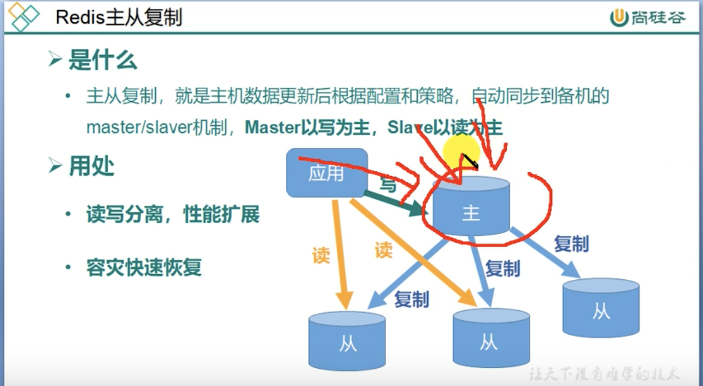

RabbitMQ
Table of Contents
| Author | Hao Ruan (haoru@cisco.com) |
| Date | 2019-12-25 19:11:47 |
Table of Contents
1 KEY 操作
1.1 设置过期时间
EXPIRE <key> <seconds>
1.2 查看还有多少秒过期
TTL <key>
- -1 表示永不过期
- -2 表示已过期
1.3 查看当前数据库 key 的数量
DBSIZE
1.4 清空 key
FLUSHDB清空当前数据库FLUSHALL清空所有数据库
2 String
- String 类型是二进制安全的，意味着可以包含任何数据，如 jpg 图片或者序列化后的对象
- String 类型的 value 最多可以是 512M
2.1 SET,SETNX,GET,APPEND,STRLEN
127.0.0.1:6379> set k1 v1 OK 127.0.0.1:6379> get k1 "v1" 127.0.0.1:6379> append k1 test (integer) 6 127.0.0.1:6379> get k1 "v1test" 127.0.0.1:6379> strlen k1 (integer) 6 127.0.0.1:6379> setnx k1 v2 # 只有在 key 不存在时才设置 (integer) 0 127.0.0.1:6379> get k1 "v1test" 127.0.0.1:6379>
2.2 MSET,MGET,MSETNX
127.0.0.1:6379> mset k1 v1 k2 v2 k3 v3 OK 127.0.0.1:6379> mget k1 k2 k3 1) "v1" 2) "v2" 3) "v3" 127.0.0.1:6379> msetnx k4 v4 k5 v5 k6 v6 (integer) 1 127.0.0.1:6379> msetnx k1 v1 k2 v2 k3 v3 (integer) 0
2.3 INCR,DECR,INCRBY,DECRBY
127.0.0.1:6379> set num 1 OK 127.0.0.1:6379> incr num (integer) 2 127.0.0.1:6379> get num "2" 127.0.0.1:6379> decr num (integer) 1 127.0.0.1:6379> incrby num 3 (integer) 4 127.0.0.1:6379> get num "4" 127.0.0.1:6379> decrby num 3 (integer) 1
2.4 SETEX
设置键值的同时设置过期时间
2.5 GETSET
3 List
3.1 LPUSH,RPUSH,LPOP,RPOP,RPOPLPUSH
127.0.0.1:6379> lpush list1 v1 v2 v3 (integer) 3 127.0.0.1:6379> lrange list1 0 -1 1) "v3" 2) "v2" 3) "v1" 127.0.0.1:6379> rpush list1 v4 v5 v6 (integer) 6 127.0.0.1:6379> lrange list1 0 -1 1) "v3" 2) "v2" 3) "v1" 4) "v4" 5) "v5" 6) "v6" 127.0.0.1:6379> lpop list1 "v3" 127.0.0.1:6379> rpop list1 "v6" 127.0.0.1:6379> RPOPLPUSH list1 newList "v5"
3.2 LRANGE,LINDEX,LLEN
127.0.0.1:6379> lpush list1 v1 v2 v3 v4 v5 v6 (integer) 6 127.0.0.1:6379> lrange list1 0 -1 1) "v6" 2) "v5" 3) "v4" 4) "v3" 5) "v2" 6) "v1" 127.0.0.1:6379> LINDEX list1 0 "v6" 127.0.0.1:6379> LINDEX list1 -1 "v1" 127.0.0.1:6379> LLEN list1 (integer) 6
3.3 LINSERT,LREM
LINSERT <key> [before|after] <value> <new-value>LREM <key> <n> <value>n 为正：从左删除 n 个 value
n 为负：从右删除 n 个 value
n 为零：将列表中符合 value 的值全部删除
4 Set
4.1 SADD,SMEMBERS,SISMEMBER
127.0.0.1:6379> SADD s1 v1 v2 v3 v3 (integer) 3 127.0.0.1:6379> SMEMBERS s1 1) "v2" 2) "v1" 3) "v3" 127.0.0.1:6379> SISMEMBER s1 v5 (integer) 0 127.0.0.1:6379> SISMEMBER s1 v3 (integer) 1 127.0.0.1:6379> SREM s1 v3 (integer) 1 127.0.0.1:6379> SMEMBERS s1 1) "v2" 2) "v1" 127.0.0.1:6379>
4.2 SCARD,SPOP,SRANDMEMBER
127.0.0.1:6379> SADD s1 v1 v2 v3 v4 v5 (integer) 5 127.0.0.1:6379> SCARD s1 # 集合数量 (integer) 5 127.0.0.1:6379> SPOP s1 # 随机弹出 "v5" 127.0.0.1:6379> SMEMBERS s1 1) "v1" 2) "v2" 3) "v3" 4) "v4" 127.0.0.1:6379> SRANDMEMBER s1 2 # 随机选出 1) "v2" 2) "v1" 127.0.0.1:6379> SMEMBERS s1 1) "v1" 2) "v2" 3) "v3" 4) "v4"
4.3 SINTER,SUNION,SDIFF
127.0.0.1:6379> sadd s1 1 2 3 4 5 (integer) 5 127.0.0.1:6379> sadd s2 4 5 6 7 8 (integer) 5 127.0.0.1:6379> SINTER s1 s2 1) "4" 2) "5" 127.0.0.1:6379> SUNION s1 s2 1) "1" 2) "2" 3) "3" 4) "4" 5) "5" 6) "6" 7) "7" 8) "8" 127.0.0.1:6379> SDIFF s1 s2 1) "1" 2) "2" 3) "3" 127.0.0.1:6379> SDIFF s2 s1 1) "6" 2) "7" 3) "8"
5 Hash
5.1 HSET,HMSET,HGET,HGETALL
127.0.0.1:6379> hset h1 name zhangsan (integer) 1 127.0.0.1:6379> hget h1 name "zhangsan" 127.0.0.1:6379> HMSET h1 city shanghai gender male OK 127.0.0.1:6379> HGETALL h1 1) "name" 2) "zhangsan" 3) "city" 4) "shanghai" 5) "gender" 6) "male"
5.2 HEXISTS,HKEYS,HVALS,HINCRBY,HSETNX
6 Zset
7 事务
- 事务是一个单独的隔离操作：事务中所有命令都会序列化，按顺序执行。执行过程中不会被客户端发送来的命令请求打断
- Redis 事务的主要作用是 串联 多个命令防止别的命令插队
8 持久化
8.1 RDB (Redis DataBase)
在指定时间内将内存中的数据集 快照 写入磁盘。
8.2 AOF
9 主从复制
主从复制不属于集群的概念

9.1 复制原理
9.2 哨兵机制
9.2.1 启动哨兵
redis-sentinel /myredis/sentinel.conf
9.2.2 故障恢复原理
10 集群
集群至少要有 6 台，其中 3 个 master ，每个 master 有一个 slave
10.1 slots